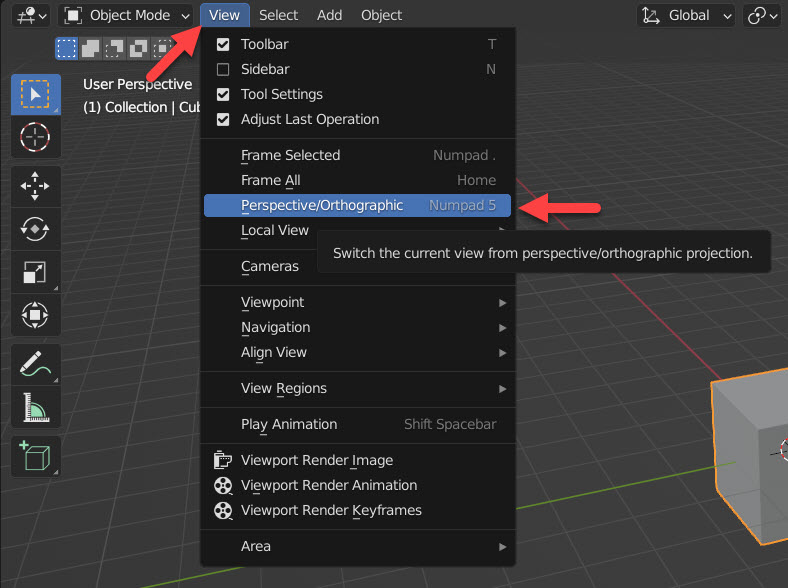
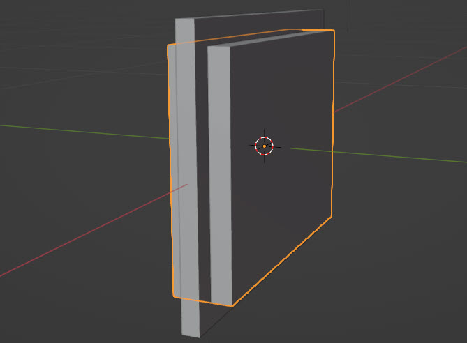
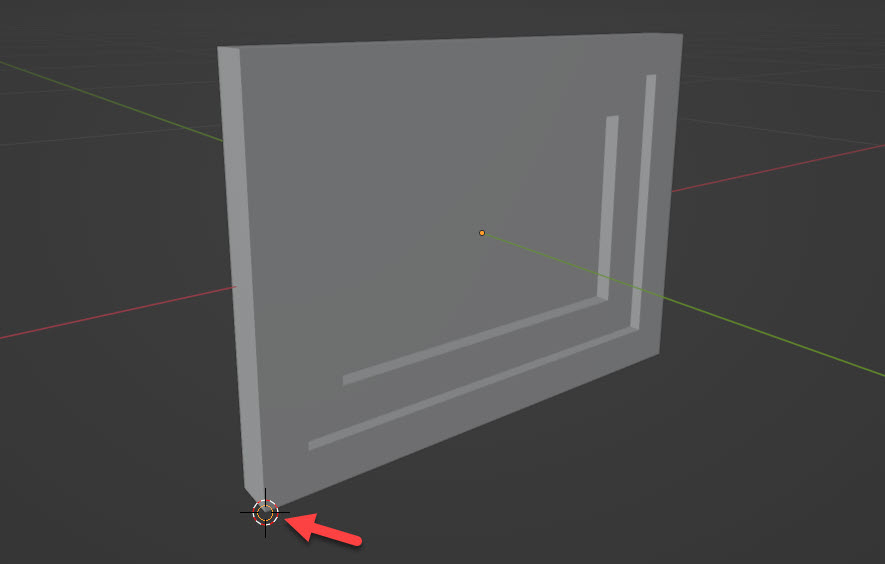

Ce chapitre vise à découvrir l'interface du logiciel Blender et à en acquérir des bases de modélisation 3D ; donc nous ne traitons ici pas encore de l'add-on BlenderBIM ni des notions liées à l'IFC.
Nous modéliserons pas à pas cette fenêtre de la Villa Le Sextant :
Interface
Fenêtres
Le logiciel s’ouvre sur cette interface par défaut :
La barre info donne accès aux options de fichier et interfaces particuliers.
La fenêtre 3D affiche la scène, composée à l’ouverture d’une caméra, un cube et une lumière.
La barre d'outils offre des raccourcis vers des outils de modélisation.
L'outliner liste les objets composant la scène.
Les propriétés donne accès aux paramètres des éléments du projet.
La timeline organise l'animation temporelle de la scène.
Souris
La manipulation de la scène 3D à la souris répond comme suit:
| Touche | Action |
|---|---|
| Clic gauche | Sélection |
| Clic droit | Menu contextuel |
| Molette | Zoom |
| Clic de la molette (maintenir appuyé) | Orbite 3D |
| Maj + Clic de la molette (maintenir appuyé) | Déplacement latéral de la vue |
Points de vue
Le menu View permet de régler la vue de la fenêtre 3D.
-Basculer entre vue perspective et orthographique:
Les vues orthogonales sont disponibles dans View > Viewpoint:
Le pavé numérique de votre clavier offre les raccourcis suivants :
| Touche | Vue depuis : |
|---|---|
| 0 | caméra active de la scène |
| 7 | dessus |
| Ctrl 7 | dessous |
| 1 | face |
| Ctrl 1 | derrière |
| 3 | droite |
| Ctrl 3 | gauche |
| 5 | perspective / orthographique |
| . | zoom sur la sélection |
📝 Ajouter MAJ à ces raccourcis vous placera sur ces même points de vue, mais vis-à-vis de la sélection courante et non de la scène.
Styles d'affichage de la scène
Suivant les opérations que l'on veut effectuer, il est possible d'afficher la scène en filaire, ombré, texturé ou rendu :

Ces options sont accessibles par le raccourci clavier : Z, puis par le chiffre correspondant proposé à l'écran.
Noter également le raccourci Alt + Z pour afficher/désafficher la scène en transparence :
Axes
L'axe X est rouge, l'axe Y est vert, et l'axe Z est bleu.
L'axe Z n'est pas affiché par défaut, mais on peut l'activer dans les paramètres d'affichage de la vue 3D :
Les touches X, Y et Z peuvent être appelées pour contraindre une opération (par exemple de translation) dans la direction correspondante. Nous en verrons un exemple plus bas.
Modélisation
Nous modéliserons pas à pas la fenêtre suivante, pour découvrir les outils essentiels de Blender :
Résultat attendu :
📝 La fenêtre ci-dessous est une interface 3D manipulable à la souris. Nous y aurons recours à plusieurs reprises dans ce tutoriel, et baliserons ainsi en jaune pour les distinguer des images.
N-Panel
Nous allons commencer par modéliser la vitre.
Le N-Panel est un panneau d'accès rapide à certaines propriétés essentielles de la scène.
-Sélectionner le cube de base. L'élément sélectionné est alors entouré de orange.
-Appeler le N-Panel par le raccourci clavier N ou en cliquant cette flèche en-haut à droite de la Fenêtre 3D :
-Sous Item > Dimensions, donner les valeurs suivantes au cube :
-Fermer le N-Panel en rappuyant sur N.
-Renommer le Cube -> Vitre dans l'Outliner, en double-cliquant sur le nom.
Résultat :

Ajouter / Dupliquer un élément
Nous allons modéliser le cadre battant.
-Ajouter une nouvelle géométrie à la scène en déroulant le menu Add en haut de la Fenêtre 3D, ou par le Rac. Clav. MAJ+A.
-Choisir Mesh > Cube (Raccourcis Clavier M puis C)
-Renommer ce Cube > Battant.
-Lui donner les dimensions suivantes :
Dupliquer la Vitre. Deux méthodes sont possibles :
-Copier-coller dans l'Outliner (Ctrl+C puis Ctrl+V)
-Dans la Fenêtre 3D, Raccourci Clavier Maj+D pour lancer la commande de duplication, puis Esc pour laisser le duplicatat au même emplacement.
-Donner au duplicatat une dimension Y = 0.1 m
Résultat :
Modificateurs
📝 Les modificateurs sont des opérations automatiques qui affectent la géométrie d'un objet de manière non destructive. Autrement dit, l'opération se met à jour toute seule si l'on modifie la scène. Pratique par exemple si l'on déplace une fenêtre : l'ouverture dans le mur automatisera sa position.
Nous allons soustraire le duplicat de la vitre au Battant.
-Sélectionner le battant, puis dans le panneau des propriétés, sous Modifiers, cliquer Add Modifier :
-Choisir Boolean :
-Choisir Difference, puis cliquer la pipette et sélectionner la copie de la Vitre (dans la Fenêtre 3D ou dans l’Outliner) :
Appliquer le modificateur en déroulant la flèche ci-dessous :

📝 Ceci a pour effet d'appliquer cette opération de manière définitive.
-Supprimer le duplicatat de la vitre par Clic droit > Delete, ou avec le Raccourci Clavier X ou Delete.
Résultat :
Transformations : Move / Rotate / Scale
Les opérations de transformation d’objet sont accessibles par le menu Object ou par les Raccourcis Clavier suivants :
| Touche | Transformation : |
|---|---|
| G | Déplacement |
| S | Redimensionnement |
| R | Rotation |
📝 Important pour une rotation, le menu ci-dessous vous permet de définir le point pivot :
Après avoir sélectionné l'objet, puis appelé une des ces commandes, on peut :
-Contraindre la transformation sur l'axe X, Y ou Z en appuyant la touche correspondante
-Donner une valeur numérique à la transformation en l'entrant sur le clavier
Puis il faut valider la transformation avec un clic.
-Déplacer le Battant en Y de -0.0049 m :
Nous allons maintenant modéliser le cadre fixe de la fenêtre :
-Ajouter un nouveau Cube et lui donner les dimensions suivantes :
-Procéder comme précédemment pour y créer un vide :
-Dupliquer le cadre battant et conférer au duplicatat une dimension Y de 0,1 m :
-Effectuer une soustraction booléenne du duplicatat sur le cadre fixe, puis supprimer le duplicatat.
Isoler un objet dans la vue
Sélectionner le cadre fixe et l'isoler dans la vue avec le Raccourci Clavier § ( en haut à gauche du clavier).
Nous voudrons désormais supprimer la partie centrale pointée par la flèche bleue, épargnée par la soustraction booléenne.
Object Mode / Edit Mode
Voilà un concept capital de Blender :
-En mode Objet, vous vous occuperez de votre objet sélectionné comme un tout, dans son ensemble.
-En mode Edition, vous aurez accès individuellement aux sommets, arêtes et faces qui le composent.
-Entrer en mode édition avec le Raccourci Clavier Tab
Toutes les faces sont orangées ce qui indique qu’elles sont sélectionnées :
-Cliquer dans le vide ou Rac. Clav. Alt + A pour tout déselectionner.
-Observer en haut à gauche que le mode édition permet de travailler soit sur les sommets, soit sur les arêtes, soit sur les faces de la géométrie en édition : sélectionner l'icône Edge
📝 Les Raccourcis Clavier 1, 2 et 3 permettent de basculer d’un à l’autre.
-Se placer en vue filaire pour pouvoir sélectionner ausi les arêtes cachées :
-Se placer en vue de face avec le Rac. Clav. 1 et sélectionner les faces au centre en traçant une fenêtre de gauche à droite :
-Supprimer avec le Raccourci Clavier Delete puis en choisissant Vertices dans le menu contextuel
-Sortir du mode édition pour revenir vers le mode objet (RC Tab) et en affichage solide
Résultat :
-Désisoler le cadre fixe du reste de la scène (RC §)
Accrochages
Les accrochages (anglais: snapping) permettent à la souris de repérer des points significatifs.
-Dans la barre info, sélectionner l’icône en forme d’aimant :
-Dérouler le menu et choisir l’accrochage de type Vertex (Sommet) :
-Rendre le cadre fixe coplanaire au cadre battant sur leur face nord (Y+)
-Tourner la vue pour observer la scène depuis le cadran X-Y+ comme ci-dessous
-Sélectionner le cadre fixe et entrer dans la commande de translation (RC G)
-Contraindre la translation sur l’axe Y (RC Y)
-Accrocher le sommet du cadre battant
Fusionner des objets
-Fusionner les 3 objets en 1 en les sélectionnant puis en appelant la commande Merge avec le RC Ctrl + J
Origine d'un objet
Blender affiche par un point orange l’origine des objets de la sélection courante, ou s’il n’y en a pas, du dernier objet sélectionné. Exemple ci-dessous avec un plan :
Cela affecte de manière notable les rotations, par exemple.
NB : si vous ne voyez pas un tel point, s’assurer de ce réglage de la vue :
Comme nous le verrons plus tard, BlenderBIM créera un vide à l’inclusion d’une fenêtre dans un mur. Ce vide prendra la taille de la fenêtre et se positionnera en X+Y+ à partir de l’origine de la fenêtre. La position de l'origine d'un objet par rapport à sa géométrie est donc fondamentale.
-Activer les accrochages de type Vertex et l’outil Cursor :
-Déplacer le curseur sur le coin inférieur gauche de la fenêtre comme ci-dessous :
-Réactiver l’outil de sélection et sélectionner la fenêtre.
-Dans le menu Object -> Set Origin, cliquer Origin to 3D Cursor pour déplacer l’origine de l’objet fenêtre vers le curseur.
-Les propiétés d’emplacement d’un objet répondent également de ce point origine. Dans le N-Panel, sous Location, remettre les XYZ à 0 m pour déplacer toute la fenêtre dans le cadran XYZ+, faisant coïncider l'origine de cet objet avec l'origine du projet :
Appliquer les Transformations
Lorsque l'on a terminé de telles modifications sur un objet, il est bon d'appliquer ces transformations.
-Dans le menu Object > Apply, choisir All Transforms. Ou passer par les RC Ctrl+A puis A.
Ceci a par exemple pour effet de redonner à l'objet une échelle de 1 :Bravo! La modélisation pas à pas de cette fenêtre est terminée, et nous avons vu les outils essentiels pour s'initier à la modélisation architecturale sur Blender.